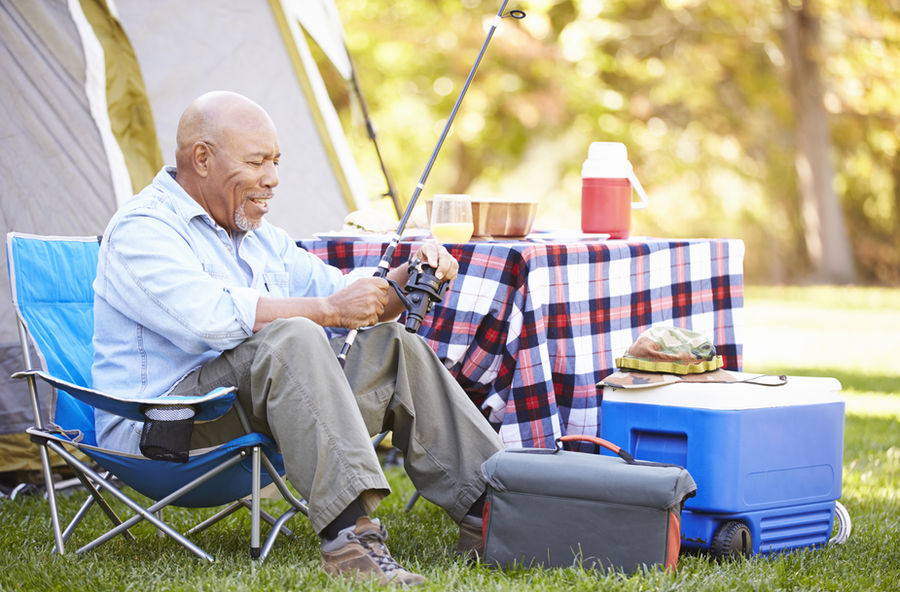
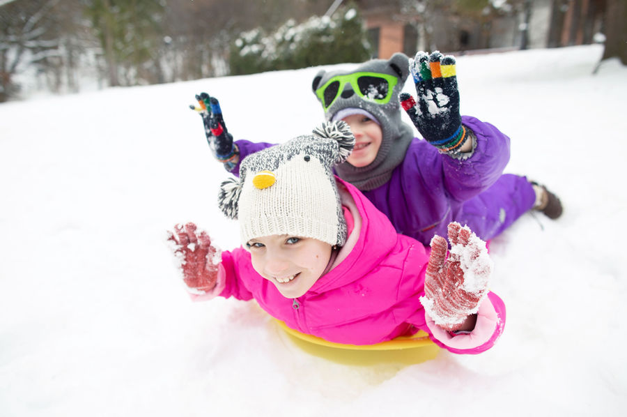
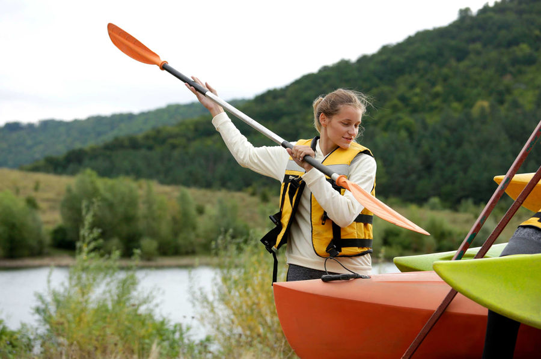

Activities
East Canyon Resort has many on-site activities for members and guests, including tennis, pickleball, basketball, volleyball, horseshoes, shuffleboard, mini-golf, two swimming pools, two hot tubs, kiddie pools, splash pad, game room, playground, children's fishing pond, shooting/archery range, and about 64 miles of ATV and hiking trails.

Summer
Enjoy tennis, pickleball, basketball, volleyball, horseshoes, shuffleboard, mini-golf, two swimming pools, two hot tubs, kiddie pools, splash pad, game room, playground, children's fishing pond, shooting/archery range, and about 64 miles of ATV and hiking trails.

Winter
There is an indoor game room with a shuffleboard table, ping-pong table, foosball table, board games, and a sitting area by the fireplace. Outdoors, members and guests can enjoy snowshoeing, cross-country skiing, and sledding hills.

Nearby
Boating, swimming, fishing, or relaxing by the lake are options only minutes away at East Canyon Reservoir. Tubing the Weber River or white water rafting is about half an hour away. East Canyon Resort is about an hour drive from many major ski resorts. Discounts are offered through TRAX PowerSports Rentals located in Morgan.